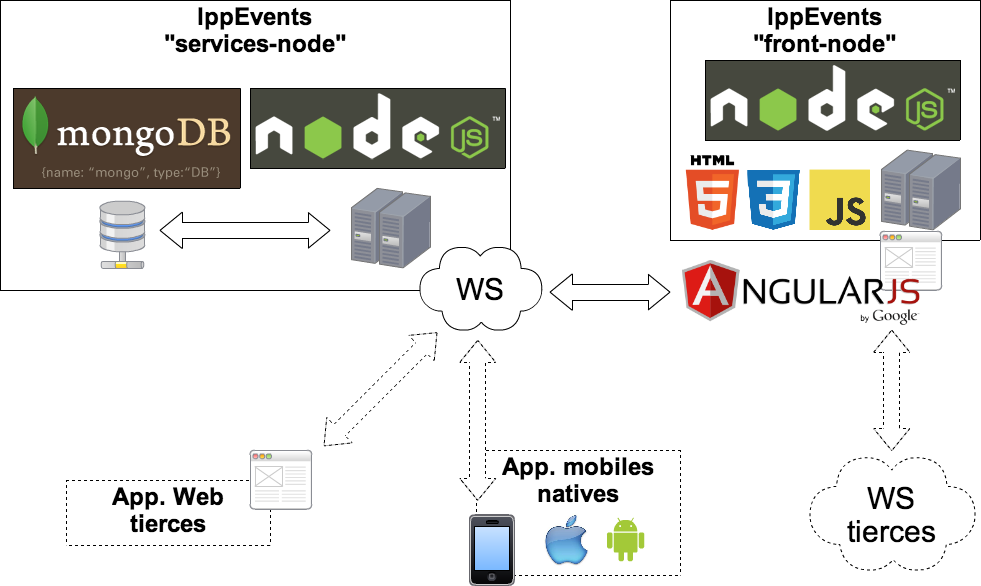

Ippon
Coding dojo
Full stack JavaScript
Présentation générale
Présentation générale
Pourquoi (full stack) JavaScript ?
- Plus uniquement pour l'intéractivité côté client
- Émergence des architectures côté client
- Un seul et unique langage à tous les niveaux
- Ce n'est pas que jQuery + stackoverflow !
Présentation générale
Qu'allons nous utiliser ?
- Côté serveur : node.js
- Base de données : MongoDB
- Côté client : AngularJS
- Boîte à outils : Yeoman
Présentation générale
Architecture
Node JS
Node JS
Présentation générale
- Serveur JavaScript
- Fonctionnement monothread/asynchrone
- Moteur V8 de Google celui utilisé par Chrome
Node JS
NPM : Node Package Module
- Mise à disposition de modules en tout genre
- Les plus connus : Express, Grunt, Nodemon, ...
-
Ajouter un module
npm install module -
Ajouter un module de manière globale
npm install -g module - Le fichier package.json pour vous simplifier la vie
-
Enrichir package.json
npm install --save-dev module
Installation 1
Installation 1
IppEvents "services-node"
-
GitHub
- My README is beautiful
Yeoman

Yeoman
Présentation générale
- Module node.js pour construire des applications
- S'appuie sur les modules Grunt et Bower
- Super starter kit : tâches prédéfinies, preprocessing, livereload, etc.
- Possibilité de créer des générateurs
Yeoman
Grunt
- Permet de lancer/automatiser des tâches
- Plein de plugins : minification, analyse de code, etc.
- Utilise le fichier Gruntfile.js (et à besoin de package.json)
Yeoman
Bower
- Permet de gérer les dépendances des modules
- Utilise le fichier bower.json (remember package.json ?)
AngularJS
AngularJS
Présentation générale
- Framework MVC Javascript
- Single Page Application réagissant sur les événements
- On ne manipule plus le DOM
- Gère navigation, fragments de pages, directives
Installation 2
Installation 2
IppEvents "front-node"
-
GitHub
- My README is beautiful
Les liens intéressants pour se faire les dents
Les liens intéressants pour se faire les dents
- node.js : Tuto + Site officiel
- AngularJS : Tuto + Site officiel
- Yeoman : Tuto + Site officiel
- Mongoose : Tuto + Site officiel